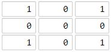
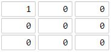

Leetcode 1162.地图分析【C++】
本文最后更新于：2020年7月4日 晚上
地址：https://leetcode-cn.com/problems/as-far-from-land-as-possible/
题目
你现在手里有一份大小为 N x N 的『地图』（网格） grid，上面的每个『区域』（单元格）都用 0 和 1 标记好了。其中 0 代表海洋，1 代表陆地，你知道距离陆地区域最远的海洋区域是是哪一个吗？请返回该海洋区域到离它最近的陆地区域的距离。
我们这里说的距离是『曼哈顿距离』（ Manhattan Distance）：(x0, y0) 和 (x1, y1) 这两个区域之间的距离是 |x0 - x1| + |y0 - y1| 。
如果我们的地图上只有陆地或者海洋，请返回 -1。
示例 1：

输入：[[1,0,1],[0,0,0],[1,0,1]]
输出：2
解释：
海洋区域 (1, 1) 和所有陆地区域之间的距离都达到最大，最大距离为 2。示例 2：

输入：[[1,0,0],[0,0,0],[0,0,0]]
输出：4
解释：
海洋区域 (2, 2) 和所有陆地区域之间的距离都达到最大，最大距离为 4。提示：
1 <= grid.length == grid[0].length <= 100grid[i][j]不是0就是1
解题思路
这个题Leetcode上标注难度“中等”，我可以说做出来了，但也没做出来，因为逻辑是对的，但是超时……
这里还是先讲我超时的思路。很简单的暴力解的思路，计算每一个海洋到最近的陆地的距离 mino ，再取其中的最大值 maxo 即题目要求的离陆地区域最远的海洋。
超时的原因很明显的，无脑的遍历并计算所有陆地到海洋的距离，也就是说对于 m 个陆地 n 个海洋的情况就要遍历并计算 m × n 种可能的情况，而且可以想到，并不是每个海洋都会与所有的陆地相接，所以完全没必要对不可能接触到的陆地做判断，这样看来显然我的暴力解是极其耗时的……
具体逻辑：定义两个 vector<pair<int, int>> 类型数组 land 和 ocean ，遍历整个地图分别保存所有陆地和海洋的坐标。题目说了如果只有陆地或者海洋，就返回 -1 ，对应的就是如果 land.empty() || ocean.empty() 就返回 -1 。遍历所有的海洋，对每一个海洋 o ，遍历所有陆地并计算 o 与陆地之间的最短距离 mino，而题目要求的离陆地区域最远的海洋到里这个海洋最近的陆地的距离，就是陆地到每一个海洋的最近距离的最大值。
附上暴力解超时的代码如下~
暴力解代码（超时）
class Solution {
public:
int maxDistance(vector<vector<int>>& grid) {
vector<pair<int, int>> land;
vector<pair<int, int>> ocean;
for (int i = 0; i < grid.size(); i++) {
for (int j = 0; j < grid[0].size(); j++) {
if (grid[i][j] == 1) {
land.push_back({ i,j });
}
else {
ocean.push_back({ i,j });
}
}
}
//只有陆地或者海洋
if (land.empty() || ocean.empty())
return -1;
int maxo = 0;
for (auto o : ocean) {
//离海洋o最近的陆地的距离
int mino = abs(land[0].first - o.first) + abs(land[0].second - o.second);
for (int i = 1; i < land.size(); i++) {
int d = abs(land[i].first - o.first) + abs(land[i].second - o.second);
mino = mino < d ? mino : d;
}
maxo = maxo > mino ? maxo : mino;
}
return maxo;
}
};本博客所有文章除特别声明外，均采用 CC BY-SA 4.0 协议 ，转载请注明出处！